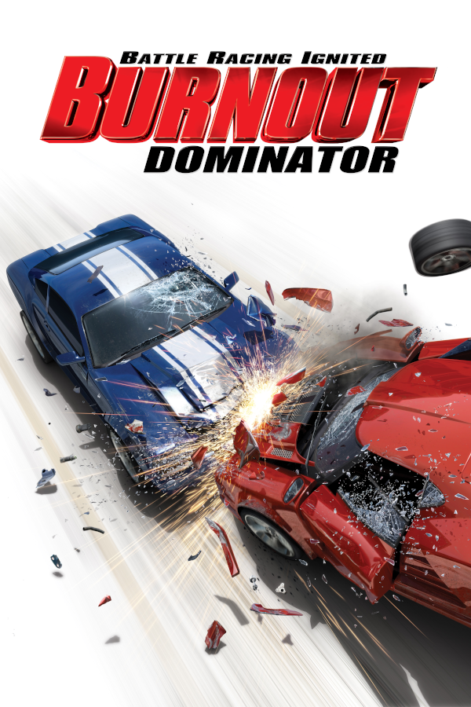

Burnout Dominator
Burnout Dominator
Details
|  | |
| Playtime | Not Played |
| Last Activity | Never |
| Added | 4/29/2025 5:00:18 |
| Modified | 4/29/2025 8:35:22 |
| Completion Status | Not Played |
| Library | Playnite |
| Source | |
| Platform | Sony PlayStation Portable |
| Release Date | 3/6/2007 |
| Community Score | 74 |
| Critic Score | 76 |
| User Score | |
| Genre | Racing |
| Developer | EA UK |
| Publisher | Electronic Arts |
| Feature | Multiplayer Single Player |
| Links | Wikipedia MobyGames |
| Tag | [Game Engine] RenderWare |
Description
Burnout Dominator is a 2007 racing video game developed by EA UK and published by Electronic Arts for PlayStation 2 and PlayStation Portable. It retains the core gameplay of the series, as players race at top speeds through dozens of World Tour events testing "reckless skill-based" driving techniques.
This is the only Burnout game that was not developed by Criterion Games although the logo appears at the startup, and the first Burnout game in the series since Burnout 2: Point of Impact to not feature the "Crash Mode". At the time Dominator was being developed, Criterion was busy working on Burnout Paradise and was waiting to re-introduce the mode in a new form for the latter title, but Criterion Games are listed as "the makers of this game" in the game manual and credited as developer on the official Electronic Arts site. This was also the final Burnout game to be released on both the PlayStation 2 and PlayStation Portable.
Gameplay
The main focus in Burnout Dominator is the return of "Burnouts", which are the result of draining a complete boost meter without stopping. The boost meter in Burnout Dominator is primarily orange flames prior to a full boost meter, at which point in time the flames turn blue (known as "Supercharge Boost"). Driving dangerously while using supercharge boost will light up the arrows on the boost meter, and when they are all lit, one can obtain a Burnout once the current supercharge boost has drained. The process can be continually repeated allowing the player to get a Burnout Chain. Prior to Burnout Dominator, Burnouts were last seen in Burnout 2: Point of Impact.
Features removed from the previous game, Burnout Revenge, include Traffic Checking (the ability to ram into smaller vehicles heading in the same direction as the player's vehicle), Traffic Attack Mode, Crash Mode (a puzzle-oriented mode, in which one's vehicle is driven into an intersection full of traffic with the aim to cause the largest amount of damage possible), and online multiplayer support. Also, unlike all of the Criterion developed Burnout games, the PlayStation 2 version of Burnout Dominator does not support USB steering wheels such as the Logitech Driving Force or Logitech Driving Force Pro.
The main single-player mode known as the World Tour is split into 7 different series, based on the different classes of car that are in the game. The series are Classic, Factory, Tuned, Hot Rod, Super, Race Specials and Dominator. The vehicle lineup is mostly new with some cars from previous two Burnout titles peppered into the game (such as the Custom Coupe Ultimate, Euro Circuit Racer and Works M-Type). The events and new challenges in the World Tour include:
- Race (standard racing for the finish line)
- Road Rage (timed event where the goal is to takedown as many opponent drivers as possible)
- Eliminator (similar to race, but the driver in last place every 30 seconds is eliminated from the race)
- Burning Lap (single lap time trial)
- Maniac Mode (this mode involves players driving as dangerously as they can to earn the highest scores possible by earning drifts, air, oncoming and near misses)
- Grand Prix (an event with three races on different tracks, the racer with the most points at the end of the Grand Prix wins)
- Drift Challenge (a challenge mode where the aim is to obtain as many feet as possible by drifting)
- Near Miss Challenge (same as Drift Challenge, but focusing on narrowly missing traffic to earn scores)
- Burnout Challenge (same as Drift Challenge, but focusing on obtaining Burnouts)
The other single-player mode in Burnout Dominator is known as "Record Breaker", and this mode allows one to set high scores for Race, Road Rage, Time Attack and Maniac Mode, without being restricted to specific event/location/series combinations that exist in the World Tour mode. Co-existing with the Record Breaker mode, the PlayStation Portable version of the game allowed uploading of high scores via the Burnout HQ option, which could be viewed in the EA Nation section of the Burnout Dominator website.
The PlayStation Portable version received downloable content in the form of two additional tracks, named Carnival City and Red Gate, based on South America and Eastern Europe respectively.
Reception
Burnout Dominator received "favourable" reviews on both platforms according to video game review aggregator Metacritic.